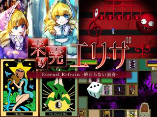
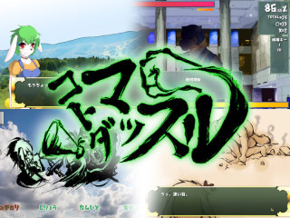
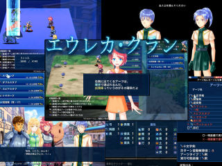

■2018-08-25 (土) 第10回ウディコン結果発表！▼
ということで毎年の夏のお楽しみ、「WOLF RPGエディターコンテスト」も
8/22をもってとうとう結果発表＆閉幕となりました！
【WOLF RPGエディターコンテスト 公式サイト】
今年の第10回も魅力的な作品が勢揃いでした。
今回は例年の通り、上位3作品についてご紹介します！
【第１位 未完のエリザ】 ナイデン内田 様

ということで総合1位は、ピアノ弾きの少女が
呪われた音楽の世界に迷い込んでしまう探索アドベンチャーゲームです！
物語性で1位を獲得した通り、見るべきは美しいという表現がぴったりなそのストーリー！
基本的にステージを攻略しながら手がかりを集めていくのですが、
テンポがよく、それぞれのステージのギミックや攻略法も凝っていて
ストーリーだけでなくゲーム面でも楽しめる一作です。
ホラー的な部分はいくらかあれど、いい具合に調整されている気がするので、
怖いのがだめな人にもおおよそ安心して楽しめると思います。
マリンさんがお若いながらも人間的に完成されているので、
その点で安心して見ていられるのもいいところです。
【第2位 コトダマッスル】 ダブリス竈 様

筋肉と言葉で紡ぐタイピングゲーム！
本当に何でも筋肉で解決していくマッスルな展開が魅力です。
登場人物のほとんどがケモノ、つまり獣人なので、
そういうのが好きな人にもおすすめできます。
タイピングゲームとしては非常に完成されており、
タイピングにおいて受け付けうる全てのキーに最初から
対応しているので非常に遊びやすい！
つまりタイピングによくある初期コンフィグが不要なんですよ！
打鍵時の爽快感がものすごくしっかり作られているのも素晴らしい点です。
「遊びやすさ」の部門で1位を獲得したのも納得の造りですが、
物語も気持ちよく「物語性」部門で2位を獲得しており、非常に完成度の高い一作です。
1位の『未完のエリザ』とは0.7点差で、どちらが1位でもおかしくないほどの僅差でした。
【第3位 エウレカ・クラン】 カザ＆ソロー 様

コマンド選択型ノンフィールドサイドビューRPG！
ユーザインターフェースの造りや戦闘画面がすごくしっかり作られていて素晴らしい！
これは見習いたいです。
使える技が確率で決まる、そしてよく使う技ほど出やすくなるという
目新しい戦闘システムでありながら、チュートリアルが丁寧に行われるので、
初見でも遊びやすいよう作られているのが本当にすごいと感じます。
「遊びやすさ」部門で3位を獲得されているのも納得です。
物語性やその他の面でもバランス良く評価が高めで
他にもキャラクターの会話時の口パクアニメや瞬きが入っていたりと
細かいところまで作り込まれている一作です。
目新しいRPGに飢えている方におすすめの一本！
この他にも方向性の異なる面白い作品が総合順位の上位にピックアップされていますので、
部門別の評価やコメントなども見ながらよければ遊んでみてくださると幸いです。
なんだかんだで今年も盛りだくさんでしたね。来年も楽しみにしています！
【WOLF RPGエディターコンテスト】
【今後について】
今後の開催予定についてですが、ウディコンは来年2019年に「第11回」を、
そして私が無事なら2020年に「第12回」も開催する予定です。
もう第11回のスケジュールも決定済みです。残り330日から始まるカウントダウンも、
気が付くといつの間にか0日になってるので時が流れるのは早いです。
まだ開発中で今回出せなかった方もいらっしゃるようなので、
来年も楽しみにお待ちしております！
そして第10回ウディコンに関わってくださった全ての関係者の皆さま、
今年も本当にありがとうございました！
よければ来年も、ぜひ見ていただけますと幸いです。
2018-08-25 (土)  カテゴリ: ウディタ
カテゴリ: ウディタ
 カテゴリ: ウディタ
カテゴリ: ウディタ